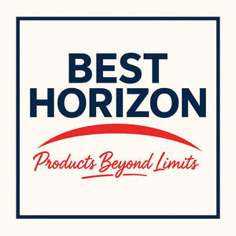

Trade Mark Journal No.2025/032 8 August 2025
UK00004241906 30 July 2025 (35)

- Class 35
- Retail services, online retail services and mail order retail services connected with the advertising and sale of bleaching preparations, cleaning preparations, polishing preparations, scouring preparations and abrasive preparations, substances for laundry use, detergents, soaps, perfumery, essential oils, fragrant oils, pot pourri, incense, incense sticks, incense sachets, baby wipes, baby shampoo, baby conditioner, baby bubble bath, baby oils, baby powder, dentifrices, toilet cleaners, toilet disinfectants, descaling preparations for household use, rust removing preparations, stain removing preparations; Retail services, online retail services and mail order retail services connected with grease removers, washing preparations, fabric conditioners, colour removing preparations, colour brightening preparations, fabric whiteners, perfumed water for ironing, wipes impregnated with cleaning preparations, toiletries, moisturisers, body lotions, hand cream, cosmetic kits, cosmetic preparations for bath and shower, antiperspirant deodorant, lipsticks, lip balms, cooling eye masks, face masks, depilatories, personal deodorants, false nails, adhesives for false nails, nail care preparations; Retail services, online retail services and mail order retail services connected with nail repair products, nail polish, nail polish remover, nail art stickers, hair lotions, hair shampoos, hair conditioners, hair oil, hair gel, hair wax, hair lacquer, hair colouring preparations, hair bleaching preparations, false eyelashes, cotton wool for cosmetic purposes, cotton wool balls, cotton wool buds, facial wipes, make-up removers, oral care preparations, mouthwashes and breath fresheners, bleaching preparations for teeth; Retail services, online retail services and mail order retail services connected with make-up, bubble bath, shower gel, cream, lotions and foam, bath salts, bath lotions, cleaning wipes for the face and body; Retail services, online retail services and mail order retail services connected with tooth polishing preparations, toothpaste, tooth whitening preparations, cosmetic stain removal preparations, air fresheners, essential oils for air fresheners, candles and wicks for lighting, fragranced candles, aromatherapy candles, Christmas candles, candles in tins, candles in glass jars, tea lights, floating candles, fragranced oil for burning, pharmaceutical preparations; Retail services, online retail services and mail order retail services connected with sanitary preparations for medical purposes, dietetic food and substances adapted for medical use, sterilising preparations for babies' feeding bottles, food for babies, dietary supplements for babies and children, plasters, materials for dressings, babies' nappies, nappy pants for infants, non-prescription medicines, incontinence pads, incontinence pants, incontinence liners, sanitary pads, sanitary pants; Retail services, online retail services and mail order retail services connected with sanitary liners, tampons, preparations for destroying vermin, fungicides, weed killers, personal sexual lubricant, ovulation test kits, sanitising wipes, antibacterial wipes, impregnated medicated wipes, impregnated antiseptic wipes, disinfectants, air fresheners, car air fresheners, air freshener sprays, air freshener re-fills, metal foil for cooking, metal foil for wrapping and packaging, aluminium foil containers; Retail services, online retail services and mail order retail services connected with ironmongery, small items of metal hardware, fasteners of common metal, wall anchors made of metal, wall plugs made of metal, metal hooks, metal bolts, metal screws, metal nuts, metal nails and metal rivets, metal pipes and metal tubes, shelving, racks, cabinets, locks and padlocks of metal, tool boxes of metal, staples for power tools, non-electric metal cables and metal wires, hand tools and hand implements; Retail services, online retail services and mail order retail services connected with knives, scissors, chisels, wire brushes, hammers, screwdrivers, screwdriver bits and drive sockets, pliers, nippers, pincers, hex keys, spanners, wrenches, tyre levers, wire strippers, combined wire strippers and cutters, cutting tools, knife sharpeners, saws, files, pipe cutters, scrapers, staple guns, shovels, trowels, drills, sanders, planers [hand tools], shears, clippers, vices, shave hooks; Retail services, online retail services and mail order retail services connected with seam rollers, stripping knives, trade strippers, filling knives and trowels, tools for cleaning brushes, craft knives, utility knives, box cutters, blades, long reach grabbers, drill bits for hand tools and hand operated tools hacksaws, caulking gun, gardening tools, manicure sets, pedicure sets, nail files, nail clippers, tweezers, eyelash curlers, razors, hair clippers for personal use, handles of metal for hand-operated hand tools; Retail services, online retail services and mail order retail services connected with cutlery, fruit and vegetable peelers, fruit and vegetable slicers, fruit and vegetable shredders, egg slicers, kitchen knives, household scissors, pasta cutters, pizza cutters, instructional, teaching and measuring apparatus and instruments, calculators, apparatus and instruments all for recordal, storage and transmission and reproduction of audio, visual and audio visual data, cameras, digital cameras, video cameras; Retail services, online retail services and mail order retail services connected with digital video cameras, optical goods, spectacles, sunglasses, lenses, electrical and electronic cables, computer cables, network cables, USB cables, scart cables, cables for digital audio/video transmission interface, cable covers, batteries, dry batteries, rechargeable batteries, lithium batteries, alkaline batteries, protective clothing, gloves for protection against accidents; Retail services, online retail services and mail order retail services connected with knee-pads for workers, protective masks, measuring tapes, batteries and charges for electronic cigarettes, charges for mobile phones, compact discs, pre-recorded compact discs, DVDs, pre-recorded DVDs, headphones, speakers, screen protectors, camera lenses, TV areal extension cable, extension leads, sim cards, baby bottles, teats for baby bottles, baby dummies, teething rings, baby feeding cups; Retail services, online retail services and mail order retail services connected with cases for mobile phones, cases for computer tablets, plug adaptors, spectacle and sunglass cases; Retail services, online retail services and mail order retail services connected with condoms, sex aids, jewellery, necklaces, earrings, bracelets, anklets, rings, body piercing jewellery, imitation jewellery, precious stones, horological and chronometric instruments, clocks and watches, jewellery boxes, jewellery rolls, jewellery stands, paper, cardboard, chalk, books, printed matter, greeting cards, gift wrapping paper, gift bows, gift tags, gift vouchers, gift bags and boxes of paper, plastic or cardboard; Retail services, online retail services and mail order retail services connected with paper decorations, diaries, photo albums, notebooks, calendars, address books, birthday books, printed stickers, memo pads, reminder books, albums, postcards, personal organisers, notecards and notelets, writing papers and envelopes, binders, paper serviettes, paper or cardboard napkin or serviette rings, paper or cardboard coasters, place cards, printed publications, photographs, pictures and posters; Retail services, online retail services and mail order retail services connected with instructional and teaching materials, charts, blackboards, drawing boards and easels, transfers, plans, maps and globes, glues and adhesives, paint brushes, babies and childrens' napkins of paper, erasers, alphabetic letters and numeral symbols, paper party decorations, cake decorations, paper cupcake cases and wrappers, paper or cardboard cake boxes, party bags of paper or plastic, tablecloths of paper or plastic; Retail services, online retail services and mail order retail services connected with paper bunting, banners, runners and badges, party stationery, pads of party invitations, artists writing implements and materials, stationery, pens, pencils, printing blocks, stencils, roller brushes, plastic materials for packaging, baking paper, baking cases of paper, coffee filter papers, paper napkins, paper placemats, paper doilies, toilet paper, paper tissues, facial tissues, bin liners made of paper and/or plastic; Retail services, online retail services and mail order retail services connected with scented bin liners, refuse bags of paper and/or plastic, paper towels, cling film, plastic food storage bags for household use, gift wrapping foil, nail stencils, paint roller handles of metal, trunks and travelling bags, animal carriers, collars, harnesses and leads for dogs and cats, cat litter trays, boxes and tins, cat litter liners, cat litter, dog litter, dog treats, chew toys, dog waste bags, pet toys, pet grooming glove; Retail services, online retail services and mail order retail services connected with brushes and combs for grooming pets, dog clippers, dog or cat baskets and beds, dog tags, cat/dog flaps, dog apparel, dog coats, cat coats, dog and cat flaps, bags, purses, wallets, cases, cosmetic bags, wash bags, card holders, luggage, umbrellas, tool bags and belts (empty), document wallets, passport holders, credit card holders, handbags, rawhide chews, furniture, mirrors, magnifying mirrors, compact mirrors; Retail services, online retail services and mail order retail services connected with photograph and picture frames, statues, carvings, knobs, sculptures, ornaments, bins, boxes, shelves, figurines, photograph frames, trophies, plaques, placards, figures, door stops, baskets, wall decorations, corks, cork memo boards, corks for bottles and containers, bamboo canes, split cane flower sticks, cane plant supports (sticks), planters, tubs, baskets of wicker, shells, ornaments of shell; Retail services, online retail services and mail order retail services connected with baby changing mats, household and kitchen utensils and containers, butter dishes, kitchen moulds, cake moulds, pastry and biscuit cutters, spaghetti tongs, garlic presses, whisks, scoops, chopsticks, ice cube trays, coasters, cocktail stirrers, hand operated coffee grinders, non-electric coffee percolators, baking tins, baking trays, chopping boards, butlers' trays, cutlery trays, trays for household purposes, jars for household use, sieves, colanders; Retail services, online retail services and mail order retail services connected with glass flasks, cooking pots, cooking skewers of metal, corkscrews, graters, drinking flasks for travellers, insulating flasks, cooking pans, frying pans, funnels, napkin rings, pepper pots, pepper mills, salt cellars, salt shakers, rolling pins, stoppers, strainers, tableware, tongs, ladles, combs and sponges, brushes, articles for cleaning purposes, scrubbing brushes, cloths for cleaning, sponges, toilet brushes; Retail services, online retail services and mail order retail services connected with toilet paper dispensers, brooms, dustpans, buckets, mops, cloths, dusters, cleaning pads, scouring pads, steelwool, steelwool scouring pads impregnated with soap, scouring sponges, ironing boards, ironing board covers, clothes airers, rubber gloves for household use, plungers for cleaning blocked drains, unworked or semi-worked glass (except glass used in building), porcelain; Retail services, online retail services and mail order retail services connected with glassware and earthenware, crockery, drinking glasses, jugs, water bottles, sports bottles, drinking straws, bowls, cups, egg cups, dishes, mugs, plates, teapots, dispensers for cling film, cooking pans and implements, ornaments of precious metal, synthetic resin ornaments, plaster ornaments, plastic ornaments, wooden ornaments, glass ornaments, crystal ornaments, ceramic ornaments, stone ornaments, china ornaments; Retail services, online retail services and mail order retail services connected with earthenware ornaments, terra cotta ornaments, aquarium ornaments, porcelain ornaments, dustbins, toothbrushes (electric and non-electric) and holders thereof, toothpicks, dental floss, dental tape, dental picks and holders thereof, food feeding troughs and bowls, bird feeders, drinking troughs and bowls, animal combs animal brushes, animal cages, bird cages, fish bowls and tanks, litter trays, litter scoops; Retail services, online retail services and mail order retail services connected with flea combs, holders for incense sticks, incense burners, incense pots, candlesticks, candle holders, broom handles of metals, baby hair brushes, baby baths, plant pots of wicker, plant pots of plastic, plant pots of resin, plant pots of wood, yarns and threads, knitting yarns, kitting threads, sewing yarns, sewing threads, soft furnishings, table coverings, baby blankets, fleece blankets; Retail services, online retail services and mail order retail services connected with cot sheets, cot blankets, cot bumpers, clothing, footwear, headgear, underwear, socks, mittens, gloves, scratch mittens, sleep suits, romper suits, bibs, haberdashery, pins, needles, artificial flowers, hair accessories, ornaments for the hair, toys, games playthings, bath toys, educational toys for babies and children, mobiles for babies and infants, cot mobiles, confetti, party crackers, dice, toy whistles; Retail services, online retail services and mail order retail services connected with teddy bears, party poppers, pinatas, party hats, party masks, Christmas and seasonal decorations, decorations for Christmas trees, sporting goods, sporting apparatus and equipment, fitness equipment, toys for pets, amusement machines, party confetti, toys and playthings for pet animals, meat, fish, poultry and game, meat extracts, preserved, frozen, dried and cooked fruits and vegetables, jellies, jams, compotes, eggs; Retail services, online retail services and mail order retail services connected with milk and milk products, edible oils and fats, sea foods, fruit and vegetables, all being preserved, dried, cooked or processed, preparations made from all the aforesaid goods, soups, dairy products, mousses, chilled desserts, jams and jellies, salads, drinks made from dairy products, sweet spreads, savoury spreads, fillings, snack foods, Prepared meals containing (principally) meat; Retail services, online retail services and mail order retail services connected with prepared meals containing (principally) fish, prepared meals containing (principally) seafood, prepared meals containing (principally) poultry, prepared meals containing (principally) game, prepared meals containing (principally) vegetables, prepared meals containing (principally) fruit, prepared meals containing (principally) eggs, semi-prepared meals containing (principally) meat, semi- prepared meals containing (principally) fish; Retail services, online retail services and mail order retail services connected with semi-prepared meals containing (principally) seafood, semi-prepared meals containing (principally) poultry, semi-prepared meals containing (principally) game, semi- prepared meals containing (principally) vegetables, semi-prepared meals containing (principally) fruit, semi-prepared meals containing (principally) eggs, ready cooked meals consisting primarily of meat, fish, poultry, game, fruits; Retail services, online retail services and mail order retail services connected with vegetables and/or eggs, proteinaceous substances namely, milk, ice cream, cheese, eggs, yogurts, non-diary cheese, non-dairy milk, non-diary ice cream, non-dairy yogurts, dips, coffee, tea, cocoa and artificial coffee, rice, tapioca and sago, flour and preparations made from cereals, bread, pastries and confectionery, edible ices, sugar, honey, treacle, yeast, baking-powder, salt, mustard; Retail services, online retail services and mail order retail services connected with vinegar, sauces (condiments), spices, ice, confectionary, chocolate, chocolates, chocolate products, chocolate bars, edible ices, chocolate confectionery, chocolate candies, chocolate sweets, fresh fruit and vegetables, seeds, natural plants and flowers, foodstuffs for animals, dry animal foods, tinned dog food, puppy food, nutritionally complete dry dog food, meat and chocolate based animal treats; Retail services, online retail services and mail order retail services connected with biscuits for animals, nutritional foods for older animals, tinned cat foods, kitten food, nutritionally complete dry cat food, animal litter, small animal bedding, small animal treats, bird seed, fat balls for birds, fish food in pellet or flake form, aquatic plants for decorating aquaria, rabbit food, additives for animal foodstuffs not for medical purposes, hay, straw, beers, mineral and aerated waters; Retail services, online retail services and mail order retail services connected with non-alcoholic drinks, fruit drinks and fruit juices, vegetable juices, soft drinks, colas, lemonades, sodas, ginger beer, energy drinks, syrups and other preparations for making beverages, smokers' articles, ashtrays, matches, cigarette lighters, cigarette rolling papers, electronic cigarettes, liquid solutions for use in electronic cigarettes, atomizers, customizers and clearomizers for electronic cigarettes, household cleaning goods and equipment, homeware, kitchen appliances and equipment, storage goods, garden tools, garden equipment, garden furniture, cleaning preparations, preparations for car cleaning, carpet cleaning preparations, food and beverage processing and preparation machines and apparatus, kitchen utensils, steam cleaning machines, brushes for cleaning, cleaning cloths, cleaning sponges, household utensils for cleaning, kitchen containers, namely, food storage containers, kitchen towels, mould removing preparations, stain removers, rust removers, make up removing preparations, hand tools and implements, hand-operated, magnifying glasses, lighting, shower heads, gift bags, paper towels, umbrellas, storage boxes [furniture], boxes for storage purposes [plastic], boxes for storage purposes [wood], clothes hangers, seats, chairs, tables, storage racks, storage furniture, storage units, seat cushions, cushions, containers, not of metal, for storage, lint rollers, lint brushes, scrubbing and cleaning pads, household gloves, gardening gloves, garden furniture, kitchen utensils, clothes airers [clothes horse], clothes drying hangers, clothes drying racks, tumble dryer balls, household and kitchen utensils and containers, cookware and tableware, face cloths and kitchen towels, enabling customers to conveniently view and purchase any of those goods including from a retail store, a catalogue by mail order, by means of telecommunications or from an internet website; Retail services connected with the sale of household cleaning goods and equipment, homeware, kitchen appliances and equipment, storage goods, garden tools, garden equipment, garden furniture, cleaning preparations, preparations for car cleaning, carpet cleaning preparations, food and beverage processing and preparation machines and apparatus, kitchen utensils, steam cleaning machines, brushes for cleaning, cleaning cloths, cleaning sponges, household utensils for cleaning, kitchen containers, namely, food storage containers, kitchen towels, mould removing preparations, stain removers, rust removers, make up removing preparations, hand tools and implements, hand-operated, magnifying glasses, lighting, shower heads, gift bags, paper towels, umbrellas, storage boxes [furniture], boxes for storage purposes [plastic], boxes for storage purposes [wood], clothes hangers, seats, chairs, tables, storage racks, storage furniture, storage units, seat cushions, cushions, containers, not of metal, for storage, lint rollers, lint brushes, scrubbing and cleaning pads, household gloves, gardening gloves, garden furniture, kitchen utensils, clothes airers [clothes horse], clothes drying hangers, clothes drying racks, tumble dryer balls, household and kitchen utensils and containers, cookware and tableware, face cloths and kitchen towels.
SHAHZADA USMAN RAJA BEGUM